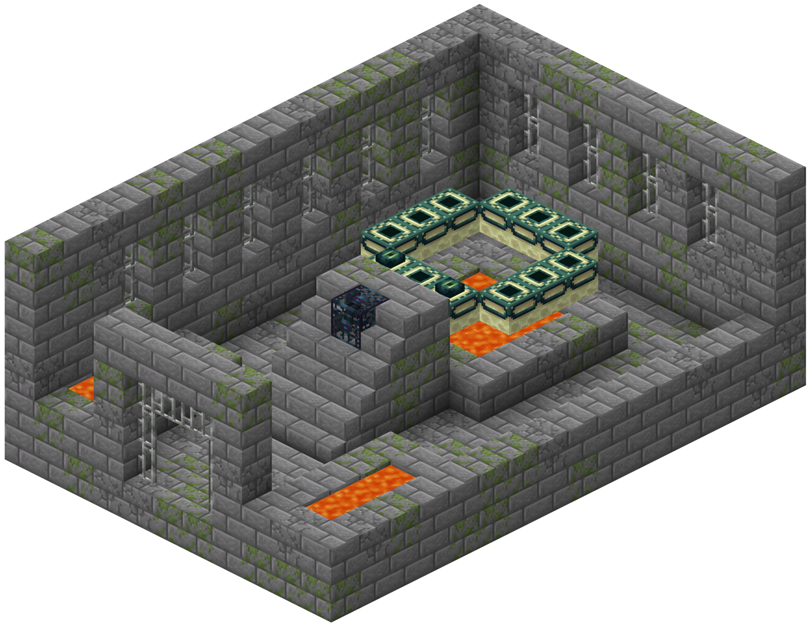

Burchten

Burchten zijn structuren die meerdere kamers bevatten met deuren en andere dingen, zoals bibliotheken, fonteinen, gevangenissen (kamers met ijzeren tralies), etc. Blokstenen, mossige blokstenen, gebroken blokstenen, deuren, tralies en stenen platen zijn de blokken van een burcht. Ze bevatten ook zilvervissen, waarmee je voorzichtig moet zijn als je een burcht ontmantelt. Het Endportaal (The End) worden gevonden in een specifieke kamer in een burcht. Deze kamer kan worden gevonden met behulp van een Enderoog. Kisten kunnen worden gevonden met de inhoud van boeken, Redstone, Enderogen, appels, brood, kompassen en ijzeren gereedschap/wapenuitrusting.